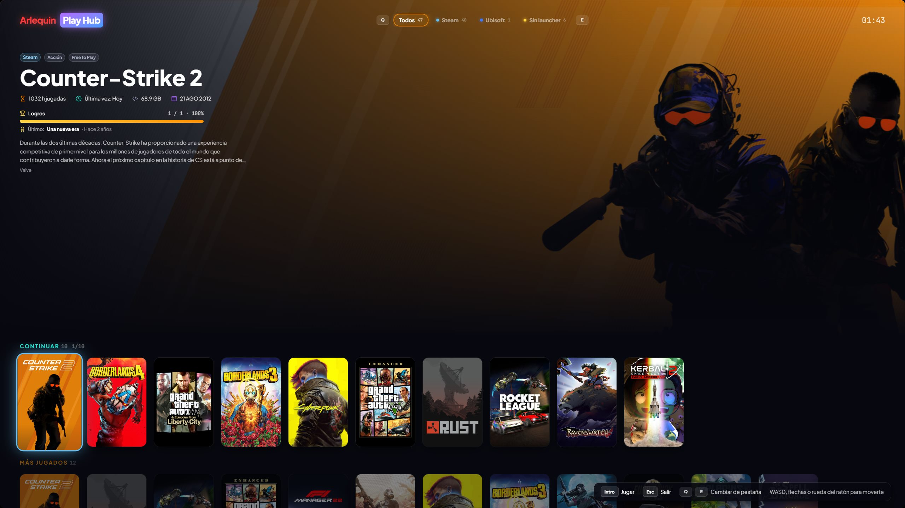

Play Hub: do grania z kanapy
Interfejs pełnoekranowy stworzony dla kontrolera i telewizora.
Przez F11 lub z paska bocznego GameHub zmienia się w duży interfejs do obsługi kontrolerem: ogromne okładki, wybrana gra w tle z jej informacjami i płynny ruch, po jednej pozycji naraz.
U góry masz karty: „Wszystkie” i po jednej dla każdego sklepu. Karty przełączasz L1/R1 (LB/RB w Xboxie), a każda ma swoje wiersze: Kontynuuj, Najczęściej grane i cała twoja biblioteka. Gdy wracasz do karty, jesteś dokładnie tam, gdzie skończyłeś, a gdy zamkniesz grę otwartą z Play Hub, wracasz do Play Hub na tej samej grze.
Rozpoznaje kontrolery Xbox, PlayStation i Switch i zmienia widoczne przyciski, aby pasowały do tego, którego używasz (albo tych, które wybierzesz). Działa też z klawiaturą (strzałki, WASD, Q/E) i kółkiem myszy. Gry bez okładki dostają własną, z nazwą i kolorami.
Pokazuje baterię twojego laptopa lub Steam Decka, kontrolerów i słuchawek, mieści się na małych ekranach jak ten w Steam Decku, a podczas gry kontroler nie steruje nim już w tle.
Przycisk Menu/Start otwiera menu, w którym wszystko zrobisz kontrolerem: wyszukiwanie (z klawiaturą ekranową), losowa gra, filtr (także według gatunku) i sortowanie, karta gry (graj, ustawienia graficzne, kopia i przywracanie SaveHub), ustawienia, przejście do innych sekcji lub do Skrzyni szczęścia oraz wyłączenie, restart lub uśpienie PC.
W becie Karta Konsole z twoimi grami z EmuHub, jeden wiersz na konsolę, i kontroler skonfigurowany w PCSX2, DuckStation i Dolphin.
Jak z tego korzystać
- F11 lub „Play Hub” na pasku bocznym.
- W Opcje → Kontroler i Play Hub wybierasz styl przycisków.
- W Opcje → Kontroler i Play Hub możesz ukrywać i zmieniać kolejność wierszy Play Hub (Kontynuuj, Najczęściej grane) oraz sekcji „Przejdź do…”.

Chcesz spróbować?
⬇ Pobierz bezpośrednio 🛍️ Pobierz ze sklepu Microsoft StoreWindows 10 i 11 (64-bit) · Za darmo · Aktualizuje się sam